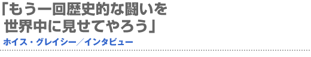
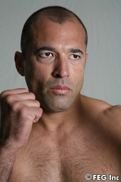
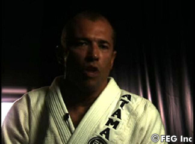
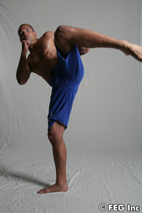
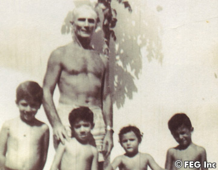
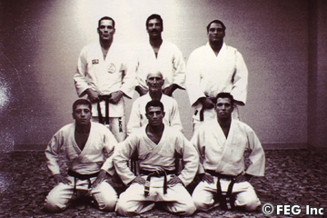

『SoftBank presents Dynamite!! USA in association with ProElite』（6月2日＝現地時間、アメリカ・『ロサンゼルス・メモリアル・コロシアム』）で、急きょ桜庭和志とのリマッチ（再戦）が決定した“リビング・レジェンド”ホイス・グレイシー。7年前に演じた桜庭との90分にも及ぶ死闘、桜庭への特別な思い、今回のリマッチにかける意気込みを聞いてみた。
リマッチはとても楽しみだ
 ――桜庭和志選手との対戦が決定しましたが。
ホイス 今回の相手がサクラバだと決まってからは、ずっと彼との試合のイメージをしているんだ。前回の彼との試合を思い出しながら、改善すべき部分を少し直そうと考えているところさ。
――以前闘ったときの桜庭選手の印象は？
ホイス サクラバはとても精神的に強いヤツだ。彼をタップさせることは難しいし、KOすることも難しいだろう。たとえKOしても、すぐ立ち上がって、また向かってくるしね。とにかく精神的にはとても強いわけさ。肉体的にも強いし、最後まであきらめない。彼は本当に一流のファイターだ。
――前回の試合の感想を教えて下さい。
ホイス あの試合は、たまたまサクラバがうまい具合に俺を蹴ったわけで、俺は足の筋が少し切れてしまい、なおかつスネ部分の骨にひびが入った。そして、６ラウンドが終わったとき、俺はコーナーに戻り、座り込んだ。そのとき、セコンドについていた父とお兄さん（ホリオン・グレイシー）に、「なんとか立つことはできるが、もう歩けもしない」と言ったんだ。そこで父は「お前がタフな男だってことは証明できたし、歩けないほど傷ついてるのに闘う必要はないだろう」と言ったんだよ。それで兄はタオルを投げた。しかし、今度の試合はいいリマッチになるだろうね。
――もう一度桜庭選手と闘うことができるのは楽しみですか？
ホイス 俺は非常に楽しみにしている。が、今回は前とは違うルールだからそれによって、試合展開は少し変わるだろうね。俺とサクラバは新しいルールに順応するしかない。
――やっぱり、時間制限なしのほうがいいですか？
ホイス 時間に限らず、あらゆる制限は少ないほうがベターだ。だけど俺はファイターだから、新ルールに順応するしかないんだ。今回の試合で前回と一番大きく違う点は、ラウンドが短いということだ。時間制限があるわけ。だから長時間のマラソンのためにトレーニングはしていない。今度の相手はよく知っている男だ。彼は何ができるのか、俺には分かっている。だから、それに対応する戦略を練るだけだ。
 ――しかし、前回の試合タイムが90分とは、今考えても異常ですよね（笑）。
ホイス 俺とサクラバには持久力があり、お互いに闘いを諦めない頑固者であるということを十分に示せたと思ってるよ（笑）。
――あの試合があなたにとって総合初の敗戦でしたよね？
ホイス そうだね。まあ、サクラバに負けたのはたしかに辛かったが、俺は本当に頑張ったし、いい闘いができたことは誰よりも俺自身が分かっている。
――当時、桜庭選手はあなた以外にも、ヘンゾやホイラー、ハイアンといったグレイシー勢と闘い、連勝をしたことによって“グレイシー・キラー”や“グレイシー・ハンター”というニックネームを持っていました。これに関してはどう思いますか？
ホイス サクラバは戦略作りが上手だ。彼は俺たちが総合の試合をどのように闘っているかを把握して、それに対応する方法も考えたわけ。実は彼はけっこう柔術の練習してきているんだ（笑）。
――今回、彼に勝つ方法は見つかっていますか？
ホイス さあ（笑）。勝つ方法はいくらでもあるんじゃない？
腕を折るしかないだろう
 ――しかし、7年もの歳月を経てリマッチが行なわれるとは想像もしなかったのではないですか？（笑）。この7年という時間は両者にどのような影響をもたらすのでしょうか？
ホイス 7年が経った今、年齢は関連してくる。どちらがちゃんとトレーニングを重ねてきたか？ どちらがちゃんと体のケアをしてきたかというのは、リングでの闘いで出るだろうね。
――あなた達のどちらがより体のケアをしてきたと思いますか？
ホイス その質問には答えたくないな。だって、あいつは酒も飲むし、不摂生をしているんだろう？ その質問に答える必要はないね。
――桜庭選手の今までのキャリアをどう評価されますか？
ホイス なんといっても、サクラバは闘うことを恐れていない。誰とでも闘うだろ？ 彼のキャリアはそれを証明しているわけだ。彼は非常に強いファイターだ。非常に危険だし、精神力も素晴らしい。
――ベタ褒めですね。
ホイス サクラバに勝つには腕を折るしかないだろう。彼は俺達グレイシーと似ているんだ。ヘンゾもこう言ってたよ。「サクラバって試合を諦めないんだよな。ハートが俺たちと似ているよね」って。彼の今までのキャリアの中にはアップ（勝利）もあれば、ダウン（敗北）もあったが、そんなの最前線で闘ってりゃ当然だ。
――桜庭選手を尊敬していますか？
ホイス うん。彼を尊敬しているし、まだまだとても危険な男だ。リマッチまでに７年がたったんだ。もう待ちきれないよ（笑）。
――あなたにとって、どのような試合展開になるのが理想ですか？
ホイス それは言えない。彼がこのインタビューを見るからだ（笑）。一番いい展開で我々は闘う。そして俺は彼を倒す。一切の怪我なしで家に帰るつもりだ。これしか言えない。
――この試合にむけての特別な寝技みたいなものはありますか？
ホイス なんて日本人らしい質問だ!!（笑）。いつもそういう質問が出るよね。「どうやって勝ちますか？」と聞いてくる。聞かなきゃ仕事にならないんだろうが、悪いけど答えられないな。サクラバは絶対このインタビューを見るだろう。答えは試合当日に見せてあげるよ。
――失礼しました（笑）。それでは桜庭選手へのメッセージを。
ホイス 7年前に我々はいい試合ができた。もう一回歴史的な闘いを世界中のみんなに見せてやろう。
――グレイシー一族の方達はあなたと桜庭選手の再戦を楽しみにしていますか？
ホイス ホイラーにはリマッチのことは言っておいた。ホイラーは「おまえにとって、サクラバは非常にいい相手だよ」って。ホイラーは俺がサクラバのことを熟知しちゃっているのを知っているからね。ホイラーはものすごく楽しみにしている。親父もそうだ。サクラバとのリマッチを見るのを非常に楽しみにしてくれているんだ。■
 |
幼い頃のホイス兄弟と、お父さんのエリオ |
 |
グレイシー・ファミリー。エリオを囲んで―― |
|